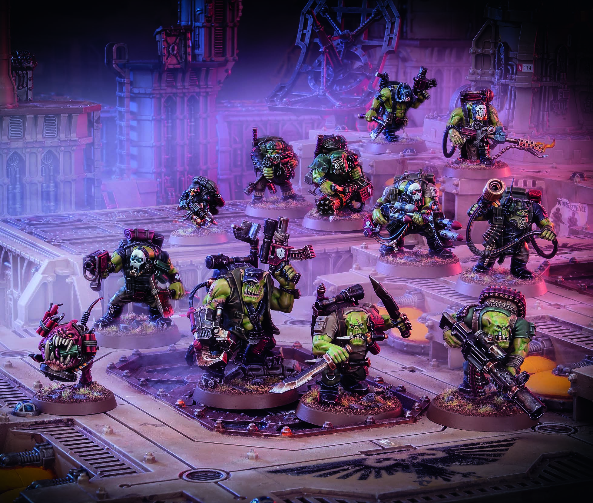
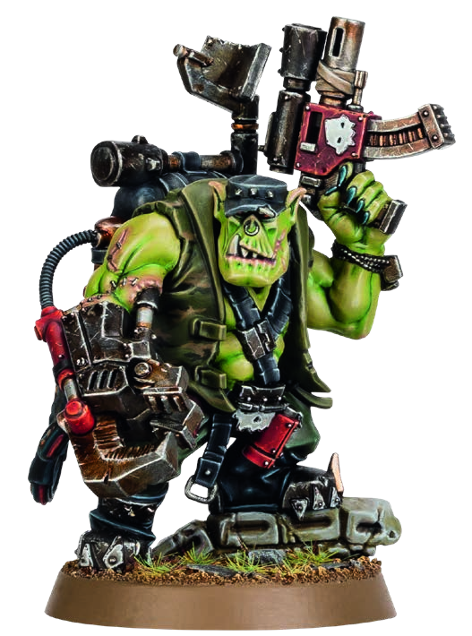
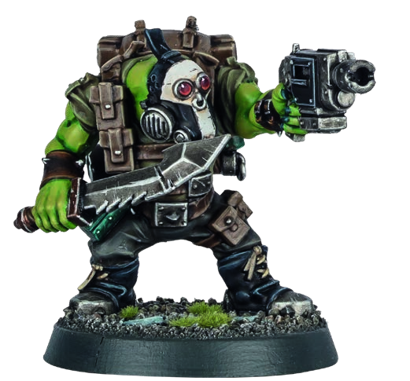
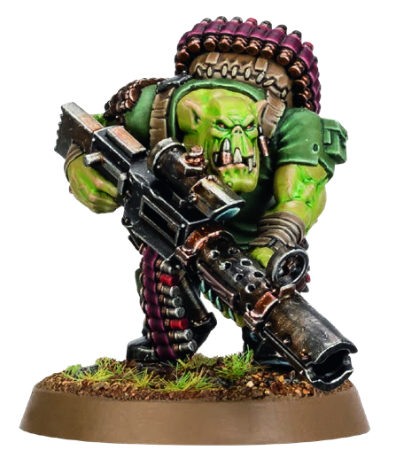
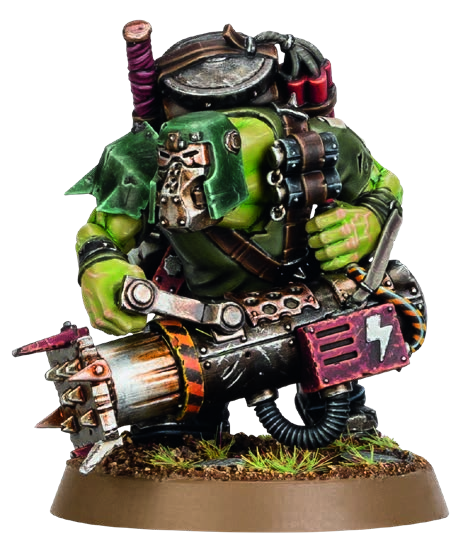
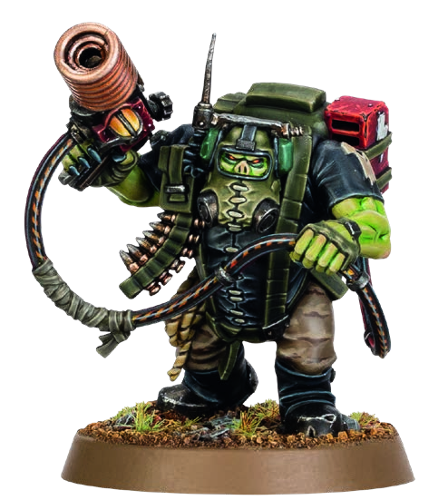
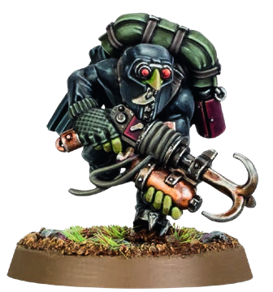
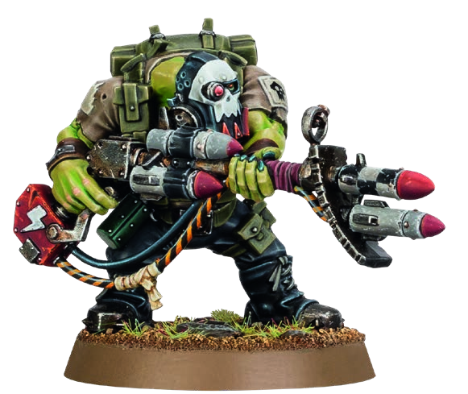

ORKS / KOMMANDOS
殺戮小隊：特戰小子 (KOMMANDOS)
歐克獸人中最狡猾也最殘忍的潛行部隊。特戰小子精通伏擊、割喉突襲與暴力爆破，深諳「又搞又毛（Mork and Gork）」的精髓——趁敵不備從陰影中突入，接著展開排山倒海的 WAAAGH! 肉搏痛擊！

戰隊組建名冊 (KILL TEAM OPERATIVES)
1 領袖 + 9 戰士
特戰小子是獸人中罕見懂得運用偽裝與詭計的戰士，但當戰鬥打響時，他們對暴力與殺戮的熱愛絲毫不減。
1. 首領特工 (LEADER)：挑選 1 名
- 特戰頭目老大 (Boss Nob)，裝備挑選二選一：
• 短手槍 + 大砍刀 (Slugga; big choppa)
• 短手槍 + 動力巨爪 (Slugga; power klaw)
- 炸彈史奎格 (Bomb Squig)*
- 特戰小子 (Kommando Boy)
- 破門小子 (Breacha Boy)
- 燒烤小子 (Burna Boy)
- 通訊小子 (Comms Boy)
- 突突小子 (Dakka Boy)
- 特戰屁精 (Kommando Grot)*
- 火箭小子 (Rokkit Boy)
- 雙刀小子 (Slasha Boy)
- 狙擊小子 (Snipa Boy)
作戰原型 (ARCHETYPES)
滲透潛入 / 搜尋與摧毀
獸人特戰小子殺戮小隊可採用 滲透潛入 (INFILTRATION) 以及 搜尋與摧毀 (SEEK & DESTROY) 作戰行動卡牌。
專屬標記指南 (MARKER/TOKEN GUIDE)
本隊伍配備專屬戰術標記：
• 炸藥標記 (Explosives token)
• 破門標記 (Breach marker)
• 炸藥包標記 (Dynamite token)
• 魚叉標記 (Harpoon token)
• 震撼彈標記 (Stun Grenade token)
• 煙霧彈標記 (Smoke Grenade token)
• 炸藥標記 (Explosives token)
• 破門標記 (Breach marker)
• 炸藥包標記 (Dynamite token)
• 魚叉標記 (Harpoon token)
• 震撼彈標記 (Stun Grenade token)
• 煙霧彈標記 (Smoke Grenade token)
陣營特規：割喉小子 (THROAT SLITTAS)
被動核心
特戰小子利用陰影與誤導悄無聲息地靠近敵人，隨後亮出鋸齒大刀猛烈突擊。
友方特戰小子特工（炸彈史奎格除外）即使當前持有隱蔽指令 (Conceal order)，依然可以合法宣告並執行「衝鋒 (Charge)」行動！
老大戰術簡報 (BOSS NOB'S BATTLE PLAN)
「聽好啦，小子們！那些蝦米（人類）搞了個又大又閃的發電機鐵盒子，給他們所有破爛玩意供電！老大的作戰計畫是：咱們直接把大門踹開，給他們來一頓瘋狂突突大佳，把火箭筒砸過去，直到那破盒子像雷區裡的蹦蹦車一樣轟隆炸飛！然後——完工大吉！有啥問題嗎？沒有吧？俺就知道沒有……那就衝上去幹架，小子們！WAAAGH！」
—— 特戰頭目老大 踩爛加茲洛特，於第二發電機融毀災難前夕
—— 特戰頭目老大 踩爛加茲洛特，於第二發電機融毀災難前夕
戰略策略 (STRATEGY PLOYS) — 戰略階段宣告使用
大佳！大佳！大佳！ (DAKKA! DAKKA! DAKKA!)
1 CP
雖然比同類狡猾，但特戰小子堅信任何目標都能靠更密集的子彈暴雨撕裂。
本轉折點內，所有友方特戰小子特工的遠程武器獲得制裁 (Punishing) 武器特規（只要保留任何爆擊成功骰，即可將 1 顆失敗骰直接轉為普通成功保留）。
WAAAGH! (歐克戰吼！)
1 CP
獸人臭名昭著的恐怖戰吼引爆嗜血狂潮，掀起近身屠戮的風暴。
本轉折點內，所有友方特戰小子特工的近戰武器獲得平衡 (Balanced) 武器特規（每次格鬥或反擊皆可重擲 1 顆攻擊骰）。
鬼祟潛伏 (SKULK ABOUT)
1 CP
特戰小子極為擅長利用掩體與陰影戲弄敵人，干擾對手的射擊瞄準。
每當敵方射擊持有隱蔽指令 (Conceal order) 的友方特工時，你可以直接將 1 顆防禦骰視為普通成功保留，免擲該骰（可與常規掩體防禦骰同時保留並累加）。
噓噓噓！ (SSSSHHHH!)
1 CP
儘管身型粗壯龐大，但只要形勢需要，綠皮特戰隊能以驚人的靜謐迅速推進。
所有目前非敵方有效目標、或持有隱蔽指令且距離敵方超過 6" 的友方特工，立即免費執行一次衝刺 (Dash) (Dash) 行動。此策略在戰鬥的第一個回合同步點（第 1 回合）不可宣告使用。
交戰策略 (FIREFIGHT PLOYS) — 交戰階段宣告使用
只是皮肉傷 (JUST A SCRATCH)
1 CP
獸人具備不可思議的生命韌性，能對足以致命的創傷嗤之以鼻。
當有攻擊骰對友方特工（炸彈史奎格與特戰屁精除外）造成普通傷害 (Normal Dmg) 時使用。直接無視該次攻擊骰所造成的傷害。
痛扁他們！ (KRUMP 'EM!)
1 CP
雖然戰術狡猾，但綠皮特戰隊內心深處永遠受渴望幹架與近戰殺戮的本能驅使。
在交戰階段即將結束時使用。挑選一名友方特戰小子特工，該特工立即免費執行一次「格鬥 (Fight)」行動。
狡猾又殘暴 (KUNNIN' BUT BRUTAL)
1 CP
利用陰影掩蔽突進到敵人眼前，隨後爆發出最野蠻純粹的暴力重劈。
當持有隱蔽指令且在同次啟動中衝鋒過的友方特工進行格鬥時，在結算第一顆攻擊骰且該骰為普通打擊 (Strike with normal success) 時使用：直接將該顆普通成功升級轉化為爆擊成功結算！
抖擻精神 (SHAKE IT OFF)
1 CP
土製護甲與狂野韌性相結合，讓特戰小子的突襲步伐幾乎無法被遏止。
當友方特工被啟動、或當其 APL 屬性遭受變更修改時使用。直至下個回合同步點開始為止，你可以無視針對該特工 APL 屬性的任何扣減與修改。
陣營專屬裝備 (FACTION EQUIPMENT)
大砍刀 (CHOPPAS)
裝備武器
綠皮砍刀看似粗糙鏽蝕，但被當頭劈中時沒人笑得出來。
友方特工（炸彈史奎格與屁精除外）配備下列近戰武器（若特工本身已有更高數值的砍刀，則使用該優質版本）：
• 砍刀：Atk 3 | Hit 3+ | Dmg 4/5
• 砍刀：Atk 3 | Hit 3+ | Dmg 4/5
炸藥包 (DYNAMITE)
裝備武器
土製炸藥捆包極不穩定，爆炸瞬間能將整隊敵軍撕成碎片。
每場戰鬥限用一次。一名友方特工（史奎格與屁精除外）可使用下列遠程武器：
• 炸藥包：Atk 5 | Hit 4+ | Dmg 4/5
• 特規：射程 4"爆炸 1"重型(僅限重整陣位)飽和
• 炸藥包：Atk 5 | Hit 4+ | Dmg 4/5
• 特規：射程 4"爆炸 1"重型(僅限重整陣位)飽和
魚叉槍 (HARPOON)
裝備武器
帶有鋒利倒鉤的拋射物，能死死鉤住倖存的獵物限制其移動。
每轉折點限用一次。一名友方特工（史奎格與屁精除外）可發射此武器：
• 魚叉槍：Atk 4 | Hit 4+ | Dmg 4/5
• 特規：射程 8"致命 5+擊暈 (Stun)
• 魚叉槍：Atk 4 | Hit 4+ | Dmg 4/5
• 特規：射程 8"致命 5+擊暈 (Stun)
摺疊槍托 (COLLAPSIBLE STOCKS)
裝備改造
削短或摺疊的槍托提升了射擊穩定度與攜帶便捷性。
直接移除友方特工下列遠程武器的射程限制 (Range x) 特規（使其成為全地圖無射程限制之遠程火力）：
• 電擊手槍 (Shokka pistol)
• 短手槍 (Slugga)
• 電擊手槍 (Shokka pistol)
• 短手槍 (Slugga)
首領特工：特戰頭目老大 (KOMMANDO BOSS NOB)

特戰頭目老大
KOMMANDO BOSS NOB
APL3
MOVE6"
SAVE5+
WOUNDS14
| 武器名稱 (NAME) | 攻擊 ATK | 命中 HIT | 傷害 DMG | 武器規則 (WR) |
|---|---|---|---|---|
| 短手槍 / Slugga | 4 | 4+ | 3 / 4 | 射程 8" |
| 大砍刀 / Big choppa | 5 | 3+ | 5 / 6 | — |
| 動力巨爪 / Power klaw | 4 | 3+ | 5 / 7 | 殘暴 (Brutal)震擊 (Shock) |
揍人時間 (Krumpin' Time)：此特工在其單次啟動期間內，可以執行兩次「格鬥 (Fight)」行動。
專屬指令行動：麻利點幹！ (GET IT DUN!) — 1 AP
支援。選擇一名距離此特工 6" 內可見的友方特戰小子特工（炸彈史奎格除外）。直至該目標特工下次啟動結束為止，其 APL 屬性 +1。
限制：老大處於敵方控場範圍內或進行反制行動時，不可執行此行動。
支援。選擇一名距離此特工 6" 內可見的友方特戰小子特工（炸彈史奎格除外）。直至該目標特工下次啟動結束為止，其 APL 屬性 +1。
限制：老大處於敵方控場範圍內或進行反制行動時，不可執行此行動。
KOMMANDOS, ORK, LEADER, BOSS NOB
特工數據卡：炸彈魔、常規小子與破門突擊 (OPERATIVES - PART 1)

特戰炸彈史奎格
KOMMANDO BOMB SQUIG
APL2
MOVE6"
SAVE5+
WOUNDS5
| 武器名稱 (NAME) | 攻擊 ATK | 命中 HIT | 傷害 DMG | 武器規則 (WR) |
|---|---|---|---|---|
| 綁在背上的炸藥 / Explosives | 6 | 4+ | 4 / 5 | 爆炸 1"限定 1 次自爆* |
| 獠牙撕咬 / Bite | 3 | 4+ | 4 / 5 | — |
自爆特規 (*Explosive)：處於敵方控場範圍內時仍可發射炸藥。不需選定目標，史奎格自身恆為主目標且無法獲得掩體或隱蔽。其爆炸範圍將波及周遭所有敵我單位！
轟隆！ (Boom!)：若史奎格在未使用炸藥前被擊殺癱瘓，擲一顆 D6（或自願擲 2D6）：只要出現 4+，史奎格移出戰場前立即免費執行一次炸藥射擊！
轟隆！ (Boom!)：若史奎格在未使用炸藥前被擊殺癱瘓，擲一顆 D6（或自願擲 2D6）：只要出現 4+，史奎格移出戰場前立即免費執行一次炸藥射擊！
一根筋笨蛋 (Stoopid)：不可選擇隱蔽指令；除衝鋒、衝刺 (Dash)、格鬥、陣位變更與射擊外不可執行其他行動。
消耗品牲口 (Expendable)：敵方的擊殺/殲滅任務、逃脫或生存計分判定中，完全無視史奎格的陣亡或存在。
消耗品牲口 (Expendable)：敵方的擊殺/殲滅任務、逃脫或生存計分判定中，完全無視史奎格的陣亡或存在。
KOMMANDO, ORK, BOMB SQUIG

特戰小子 (常規戰士)
KOMMANDO BOY
APL2
MOVE6"
SAVE5+
WOUNDS10
| 武器名稱 (NAME) | 攻擊 ATK | 命中 HIT | 傷害 DMG | 武器規則 (WR) |
|---|---|---|---|---|
| 短手槍 / Slugga | 4 | 4+ | 3 / 4 | 射程 8" |
| 大砍刀 / Choppa | 4 | 3+ | 4 / 5 | — |
戰術雜七雜八 (Taktical Wot-notz)：每轉折點各限執行一次：
• 一名友方特戰小子可免費執行「煙霧手雷 (Smoke Grenade)」行動。
• 一名友方特戰小子可免費執行「震撼手雷 (Stun Grenade)」行動（不計入常規裝備次數限制）。
• 一名友方特戰小子可免費執行「煙霧手雷 (Smoke Grenade)」行動。
• 一名友方特戰小子可免費執行「震撼手雷 (Stun Grenade)」行動（不計入常規裝備次數限制）。
KOMMANDOS, ORK, BOY

破門小子
KOMMANDO BREACHA BOY
APL2
MOVE6"
SAVE5+
WOUNDS10
| 武器名稱 (NAME) | 攻擊 ATK | 命中 HIT | 傷害 DMG | 武器規則 (WR) |
|---|---|---|---|---|
| 短手槍 / Slugga | 4 | 4+ | 3 / 4 | 射程 8" |
| 破門撞槌 / Breacha ram | 4 | 4+ | 5 / 5 | 殘暴劇烈震擊 |
專屬行動：爆破撞門 (BREACH) — 1 AP
在自身控場範圍內的地形旁放置 1 枚破門標記 (Breach marker)。凡距離該標記 1" 內的特工，可將該地形厚度不超過 1" 的牆體視為可直接通行的通路 (Accessible terrain)！
機動破門：此行動可在衝鋒或重整陣位中發動（此時花費減少 1 AP，即為 0 AP 免費使用），撞開牆面後可繼續使用剩餘距離穿過！
在自身控場範圍內的地形旁放置 1 枚破門標記 (Breach marker)。凡距離該標記 1" 內的特工，可將該地形厚度不超過 1" 的牆體視為可直接通行的通路 (Accessible terrain)！
機動破門：此行動可在衝鋒或重整陣位中發動（此時花費減少 1 AP，即為 0 AP 免費使用），撞開牆面後可繼續使用剩餘距離穿過！
KOMMANDOS, ORK, BREACHA BOY
特工數據卡：特種火力與協調支援 (OPERATIVES - PART 2)

燒烤小子 (火燄噴射器)
KOMMANDO BURNA BOY
APL2
MOVE6"
SAVE5+
WOUNDS10
| 武器名稱 (NAME) | 攻擊 ATK | 命中 HIT | 傷害 DMG | 武器規則 (WR) |
|---|---|---|---|---|
| 火燄噴射 (標準) / Burna (standard) | 4 | 2+ | 3 / 3 | 射程 8"飽和洪流 2" |
| 火燄噴射 (近距灌注) / Burna (deluge) | 4 | 2+ | 3 / 3 | 射程 4"飽和索敵 (Seek)洪流 0"* |
| 沙包拳頭 / Fists | 3 | 3+ | 3 / 4 | — |
*近距灌注特規 (Torrent 0")：代表不能選定次要目標，但武器在所有規則判定中仍被視為具備洪流特規（可觸發特定地形規則）。配備索敵特規，敵方匿蹤無法藉地形獲得掩體！
KOMMANDO, ORK, BURNA BOY

通訊小子
KOMMANDO COMMS BOY
APL2
MOVE6"
SAVE5+
WOUNDS10
| 武器名稱 (NAME) | 攻擊 ATK | 命中 HIT | 傷害 DMG | 武器規則 (WR) |
|---|---|---|---|---|
| 電擊手槍 / Shokka pistol | 6 | 4+ | 1 / 0 | 射程 8"毀滅 2劇烈擊暈 |
| 沙包拳頭 / Fists | 3 | 3+ | 3 / 4 | — |
俺有妙計，小子們！ (I Got a Plan, Ladz)：每次啟動中，執行撿起標記、放置標記或任務動作時，消耗的 AP 減少 1 點。
專屬通訊行動：聽好了！ (LISTEN IN) — 1 AP
支援。選擇一名距離此特工 6" 內可見的友方特工（炸彈史奎格除外）。直至該目標特工下次啟動結束為止，其 APL 屬性 +1（控場範圍內不可執行）。
專屬通訊行動：聽好了！ (LISTEN IN) — 1 AP
支援。選擇一名距離此特工 6" 內可見的友方特工（炸彈史奎格除外）。直至該目標特工下次啟動結束為止，其 APL 屬性 +1（控場範圍內不可執行）。
KOMMANDO, ORK, COMMS BOY

突突小子 (重機槍手)
KOMMANDO DAKKA BOY
APL2
MOVE6"
SAVE5+
WOUNDS10
| 武器名稱 (NAME) | 攻擊 ATK | 命中 HIT | 傷害 DMG | 武器規則 (WR) |
|---|---|---|---|---|
| 突突槍 (近距掃射) / Dakka shoota (short) | 5 | 4+ | 3 / 4 | 射程 9"無休 (Ceaseless) |
| 突突槍 (遠距壓制) / Dakka shoota (long) | 5 | 4+ | 3 / 4 | — |
| 沙包拳頭 / Fists | 3 | 3+ | 3 / 4 | — |
專屬射擊行動：邊跑邊突突！ (DAKKA DASH) — 1 AP
依任意順序免費執行一次衝刺 (Dash) (Dash) 與一次突突槍射擊 (Shoot)！隱蔽指令或處於敵方控場範圍內時不可執行。
依任意順序免費執行一次衝刺 (Dash) (Dash) 與一次突突槍射擊 (Shoot)！隱蔽指令或處於敵方控場範圍內時不可執行。
KOMMANDOS, ORK, DAKKA BOY
特工數據卡：狡黠突襲與精準殺戮 (OPERATIVES - PART 3)
特戰屁精
KOMMANDO GROT
APL2
MOVE6"
SAVE5+
WOUNDS5
| 武器 | A | Hit | Dmg | 特規 |
|---|---|---|---|---|
| 屁精小砍刀 | 3 | 5+ | 1 / 4 | — |
鬼祟雜種 (Sneaky Zogger)：不能持有交戰指令。凡在掩體中，絕對不可被選為射擊目標（優先於索敵 Seek 或高處優勢 Vantage 等規則，僅 2" 貼身時例外）。
抓鉤繩槍 (GRAPPLING HOOK) — 1 AP：視為重整陣位。選定可見地形點，將屁精直接重新架設於該點水平 1" 內合法位置。
抓鉤繩槍 (GRAPPLING HOOK) — 1 AP：視為重整陣位。選定可見地形點，將屁精直接重新架設於該點水平 1" 內合法位置。
KOMMANDOS, ORK, GROT
火箭筒小子
ROKKIT BOY
APL2
MOVE6"
SAVE5+
WOUNDS10
| 武器 | A | Hit | Dmg | 特規 |
|---|---|---|---|---|
| 火箭筒 (瞄準) | 6 | 4+ | 4 / 5 | 爆炸 1"無休重型(僅衝刺 (Dash)) |
| 火箭筒 (盲射) | 6 | 4+ | 4 / 5 | 爆炸 1" |
| 沙包拳頭 | 3 | 3+ | 3 / 4 | — |
KOMMANDO, ORK, ROKKIT BOY
雙刀小子
SLASHA BOY
APL2
MOVE6"
SAVE5+
WOUNDS10
| 武器 | A | Hit | Dmg | 特規 |
|---|---|---|---|---|
| 飛刀 / Knives | 4 | 3+ | 2 / 5 | 射程 6"無聲 |
| 雙手砍刀 | 4 | 3+ | 4 / 5 | 無休致命 5+ |
你就這點本事？ (Dat All You Got?)：進行格鬥或反擊後，只要此特工未陣亡，立即對該敵方額外造成 D3 點傷害！
KOMMANDO, ORK, SLASHA BOY
狙擊小子
SNIPA BOY
APL2
MOVE6"
SAVE5+
WOUNDS10
| 武器 | A | Hit | Dmg | 特規 |
|---|---|---|---|---|
| 瞄準大突突 (匿蹤)* | 5 | 3+ | 3 / 3 | 毀滅 2重型無聲 |
| 瞄準大突突 (架槍) | 5 | 3+ | 3 / 3 | 毀滅 2重型 |
| 瞄準大突突 (掃射) | 5 | 3+ | 3 / 4 | 重型(僅衝刺 (Dash))洪流 1" |
*隱密伏擊 (Concealed Position)：「瞄準大突突 (匿蹤)」僅限此特工在整場戰鬥中首次宣告射擊行動時使用。
KOMMANDOS, ORK, SNIPA BOY